Установка приложения
На каждом настоящем скриншоте красной рамкой отмечено, куда нажать.
Не получилось установить?
Пять реальных скриншотов iPhone. Красной рамкой отмечено, куда нажать.
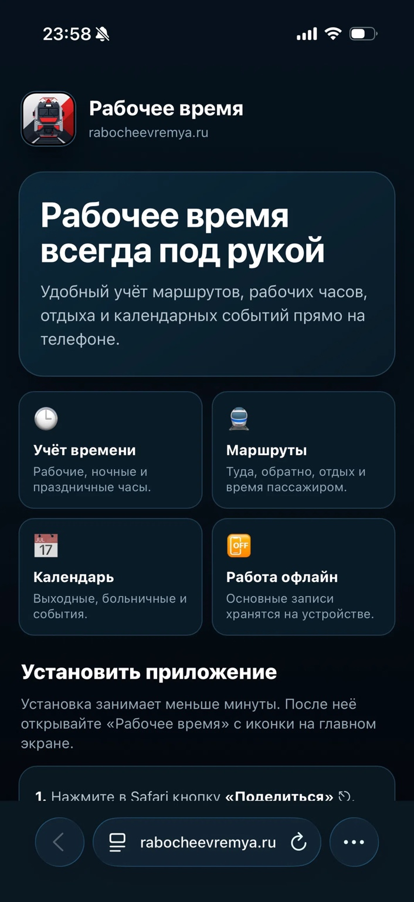
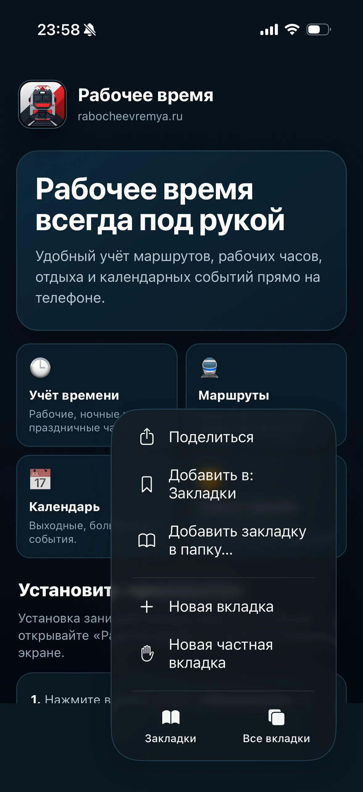
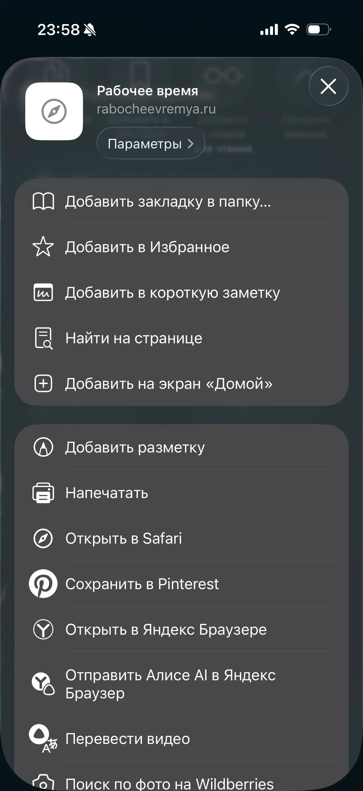
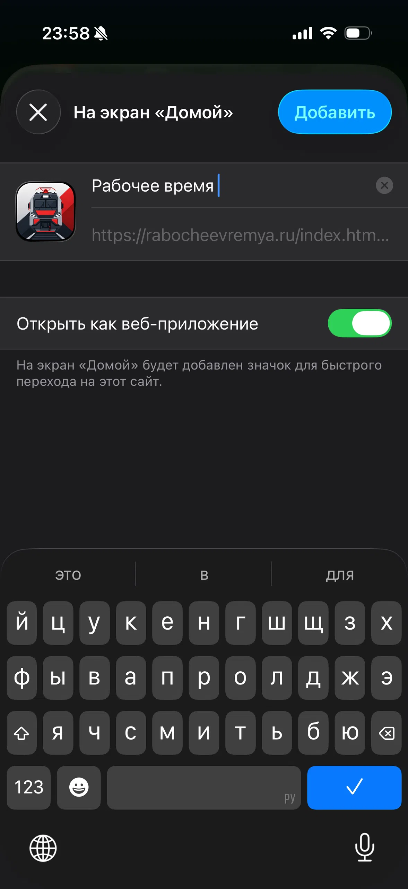
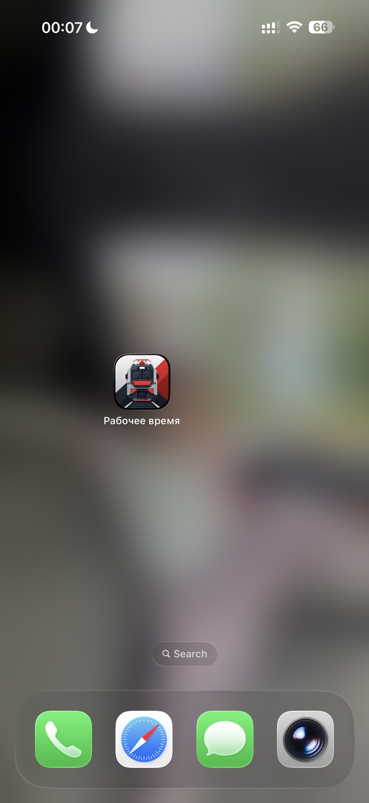
Установка на Android через Chrome
Шесть шагов по вашим скриншотам.
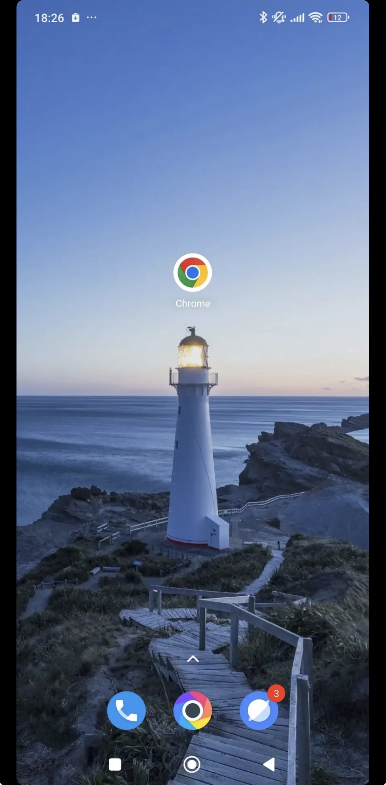
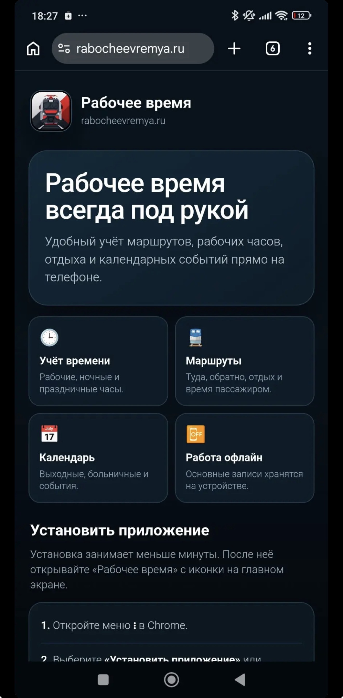
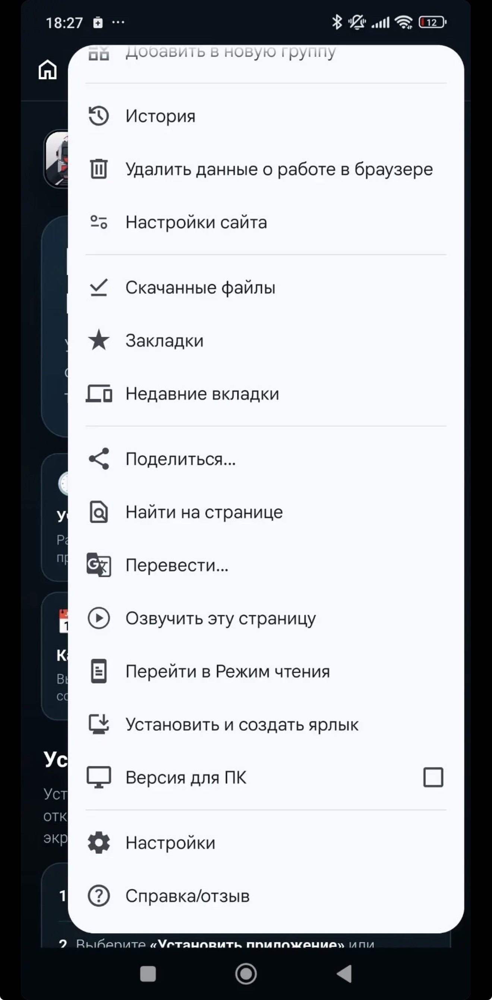
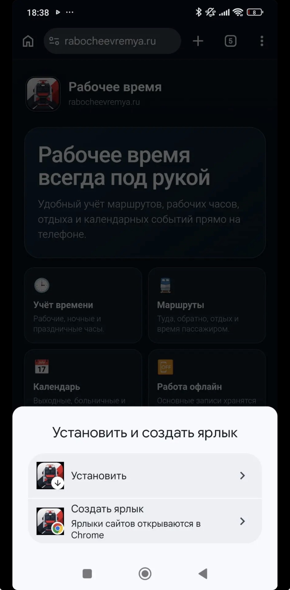
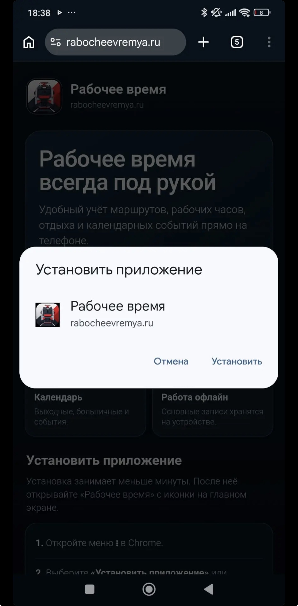
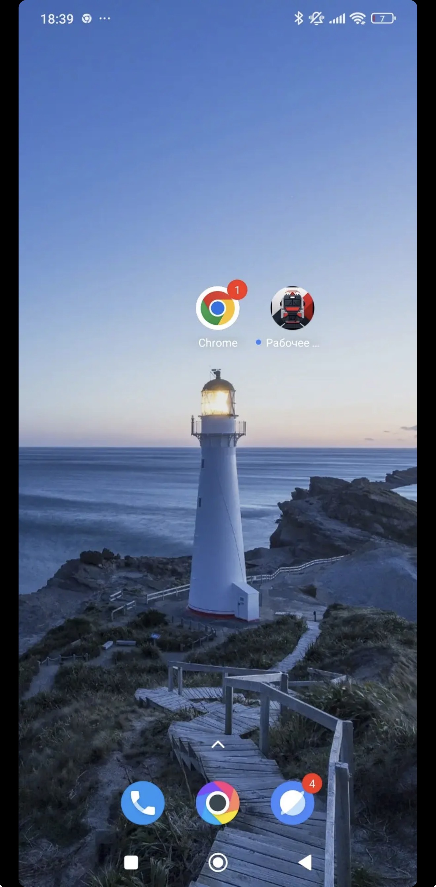
Если кнопка «Установить» не появилась, проверьте, что сайт открыт в Chrome по адресу rabocheevremya.ru.